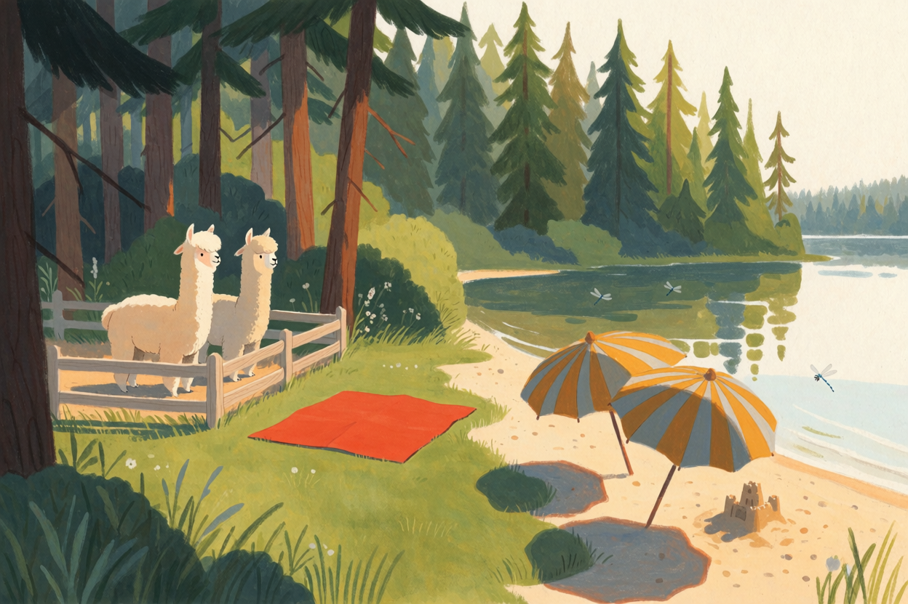
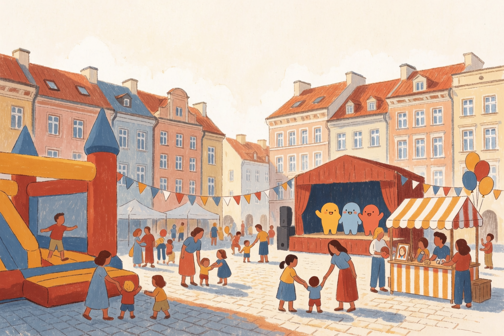

Rano · Arturówek 🦙
Po południu · Strefa Czyściochowa25SOB
Sobota · 25 lipca
Alpaki, potem Strefa Czyściochowa
🚗 Arturówek → 🚋 Stary Rynek · najlepsza pogoda
▾
☀️ 25–26° słonecznie
wyjazd 11:00
🚗 Arturówek + 🚋 centrum
obiad na mieście
Najlepsza pogoda w weekend — słonecznie, bez deszczu. Dwie odsłony: rano alpaki i plaża w Arturówku (autem, bo animacje kończą się o 16:00), a po południu plac zabaw Strefy Czyściochowej w centrum (czynna do 19:00). Auto tylko do Arturówka — reszta tramwajem. Obiad w mieście, bez pośpiechu z powrotem.
Harmonogram
11:00
Wyjazd autem do Arturówka 🚗
Łagiewnicka → Wycieczkowa przez Las Łagiewnicki → Skrzydlata. ~10–12 min, ~2,5 km.
11:15na miejscu
Alpaki, plaża i las 🦙
Piknik „Urodziny Zdrowo, Bo Na Sportowo": zagroda z alpakami, malowanie buziek, brokatowe tatuaże, pokazy ratownictwa wodnego, mega chińczyk, dmuchaniec — a do tego plaża miejska i las.
13:00
Powrót autem pod dom
Auto zostaje pod domem — parkowanie w centrum w dzień święta to udręka, dalej wygrywa tramwaj.
13:20±
Tramwaj 3 do centrum
Z pętli „Rondo Powstańców" (kier. Widzew), jazda ~15–18 min. Darmowo — wsiadacie w najbliższy.
3 Rondo Powstańców → Zachodnia
14:00
Obiad na mieście
Food court w Manufakturze (przewijaki, kawa) albo knajpki przy Starym Rynku — stąd ~5 min pieszo na Rynek.
14:45
Strefa Czyściochowa 🎈
Dmuchańce, malowanie twarzy, tatuaże brokatowe, warsztaty, plac zabaw i spotkania z bohaterami Czyściochowa. Obok strefa sensoryczna do wyciszenia i cyrk w Parku Staromiejskim.
17:00elastycznie
Powrót tramwajem 3
Bez sztywnej godziny — strefa działa do 19:00, więc wracacie, kiedy Zosia ma dość.
3 Zachodnia → Rondo Powstańców